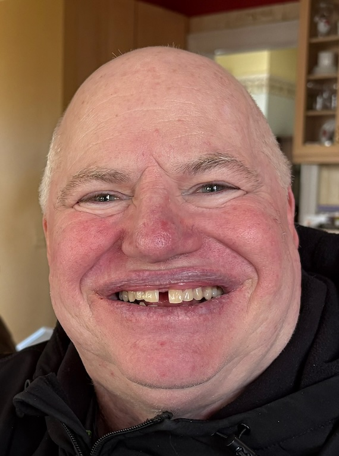
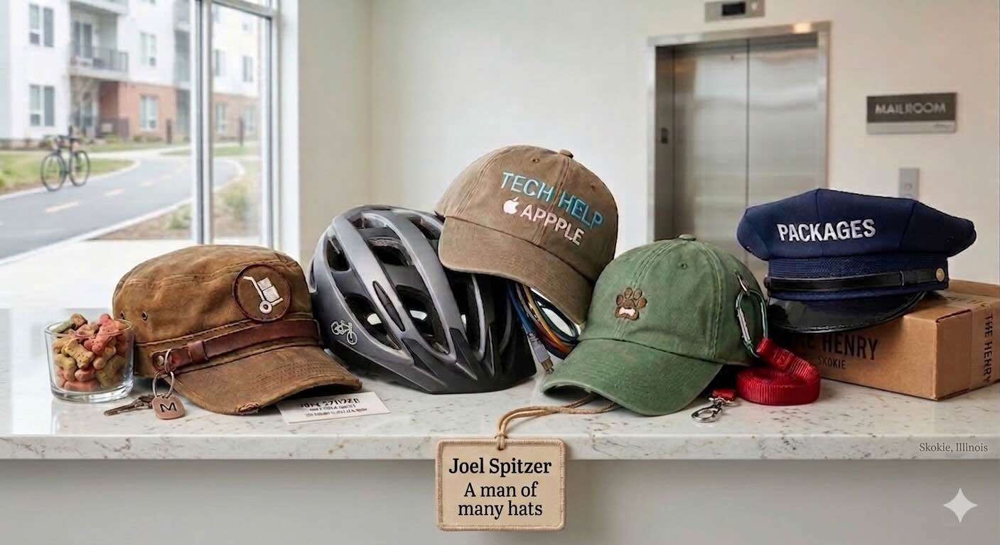

Friendly assistance for our building community

Hello! I am Joel, a fellow resident here with some extra time on my hands. I enjoy helping out around the building to make things run a little smoother for everyone.

Moving large boxes or heavy deliveries alone can be a struggle. If you need a hand getting a bulky item into your unit, I’m happy to help with the heavy lifting.
If you are having trouble getting your devices connected to the building Wi-Fi or need assistance with your iPhone, iPad, or Mac, I'm happy to help you get things working properly.
We are right by the North Shore Channel Trail. Having ridden these paths for decades, I can help you find the best routes for both traditional bicycling and e-biking. I’d be happy to cycle along to show you the way.
If you ever need someone to take your dog for a walk or just check in on them, I’d be glad to help.
I regularly check common areas for misplaced delivery packages. When I find them, I move them to the mailroom so they stay secure and reach the correct residents.